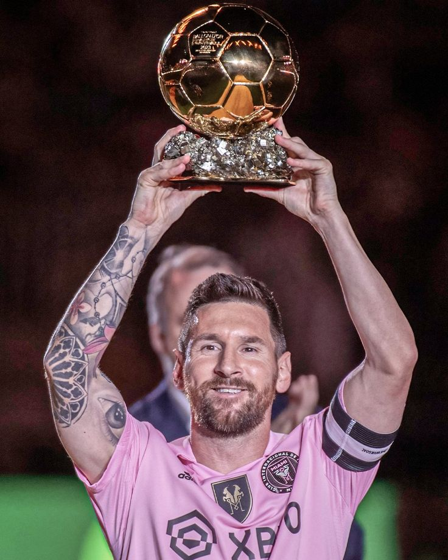
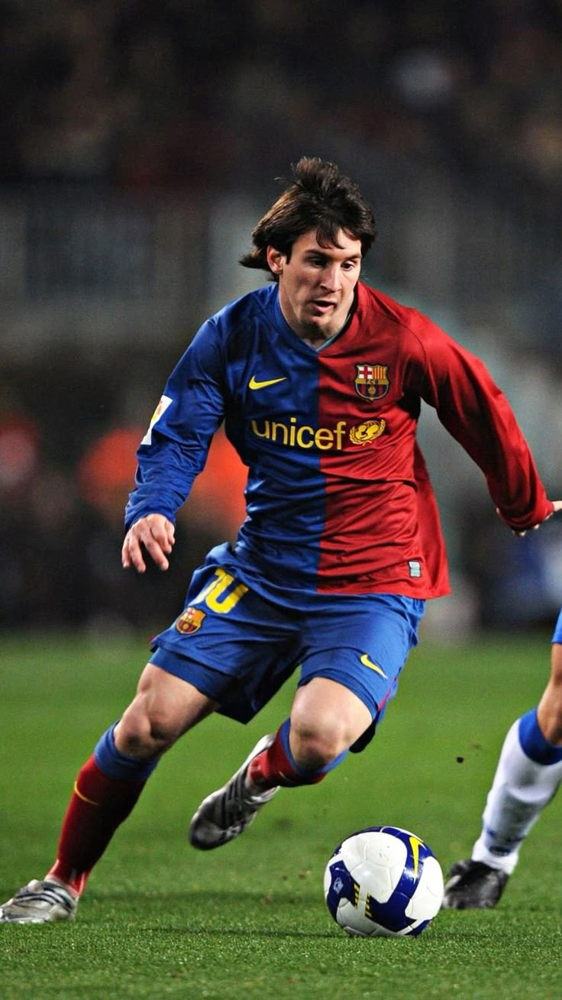
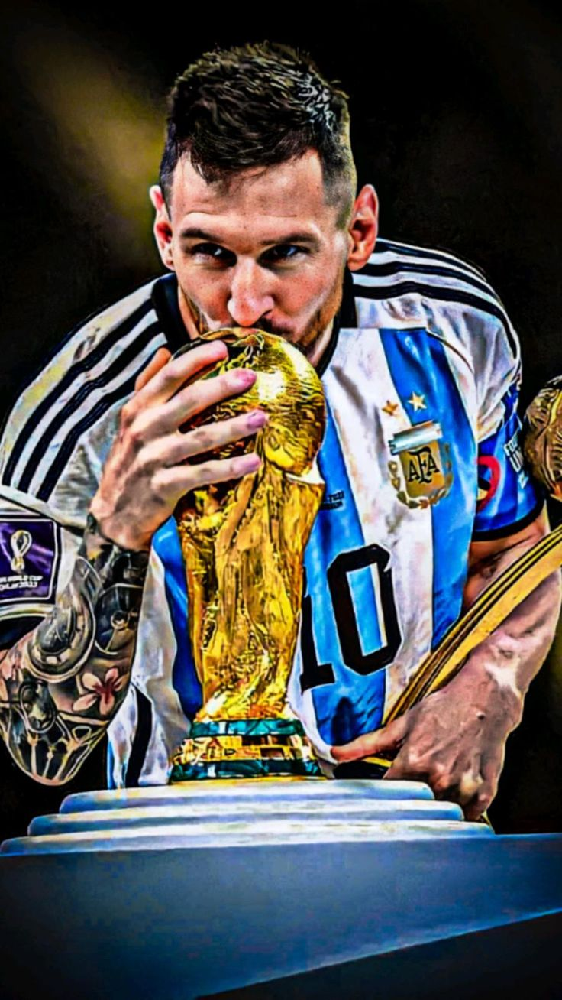
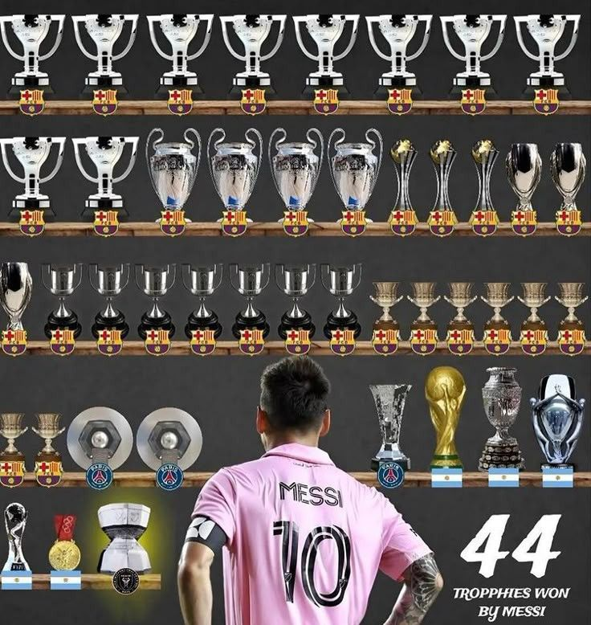

About
Lionel Andrés Messi, born June 24, 1987 in Rosario, Argentina, is widely considered one of the greatest footballers of all time.He spent most of his career at FC Barcelona, where he won 4 Champions League titles and 10 La Liga titles while breaking tons of scoring records. In 2023 he joined Inter Miami in MLS.Known as “La Pulga” for his low center of gravity and insane dribbling, Messi has won a record 8 Ballon d’Or awards. He finally lifted the World Cup with Argentina in 2022 after leading them to victory in Qatar.Off the pitch he’s known for being quiet, humble, and family-focused. The man lets his feet do the talking.

F A Q
1. What is Lionel Messi's full name?
Lionel Andrés Messi Cuccittini.
2. When and where was Messi born?
June 24, 1987, in Rosario, Santa Fe, Argentina.
3. Which club does Messi play for now?
As of 2026, he plays for Inter Miami CF in Major League Soccer (MLS).
4. How many Ballon d’Or awards does Messi have?
8 Ballon d’Or awards as of 2024. That’s the most in football history.
5. Has Messi won the World Cup?
Yes. He captained Argentina to win the FIFA World Cup in Qatar 2022, beating France in the final.
6. What’s Messi’s nickname and why?
“La Pulga” meaning “The Flea”. It’s because of his short stature, quick acceleration, and ability to dart between defenders.
7. Which club did Messi play for most of his career?
FC Barcelona from 2004 to 2021. He’s Barca’s all-time top scorer with 672 goals.
8. Is Messi left-footed or right-footed?
Left-footed. His left foot is legendary for dribbling, passing, and free kicks.
9. Who is Messi married to and does he have kids?
He’s married to Antonela Roccuzzo. They have 3 sons: Thiago, Mateo, and Ciro.